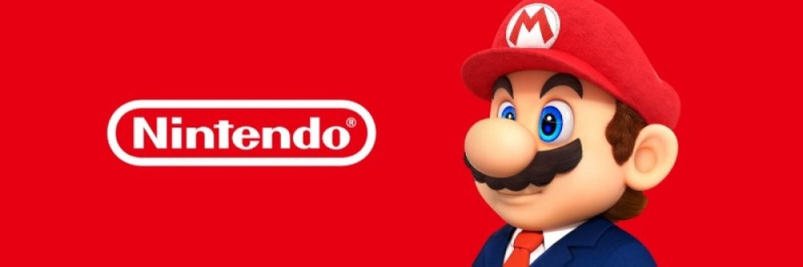
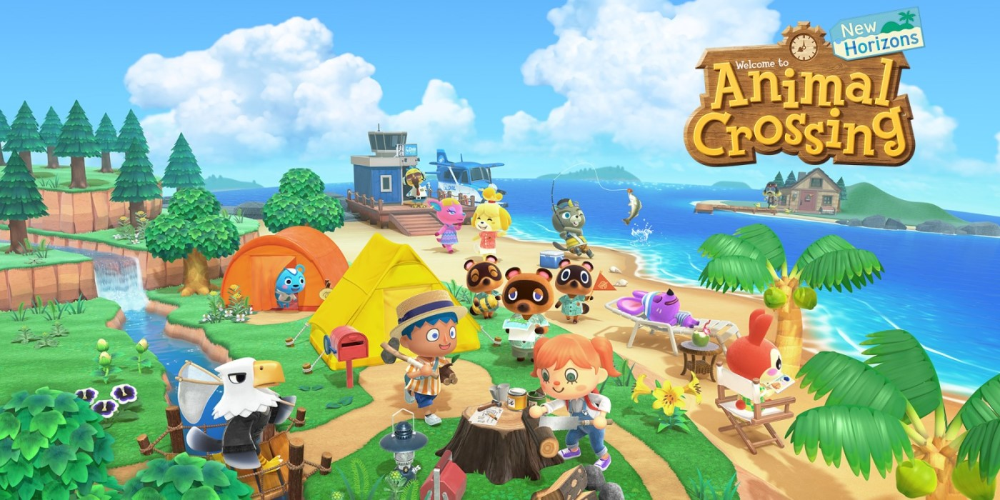
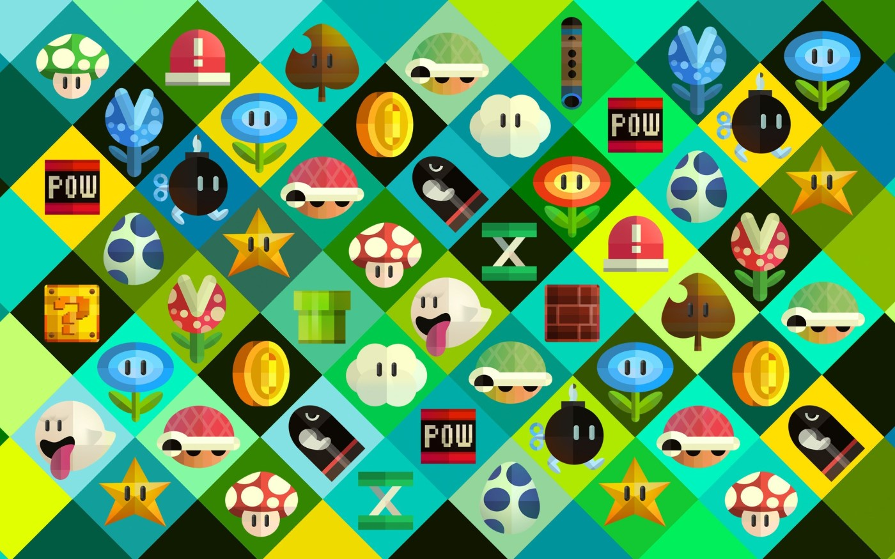
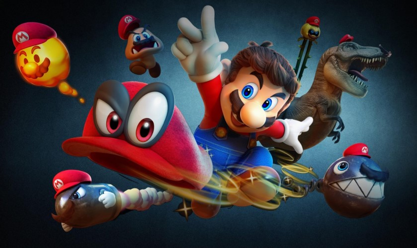
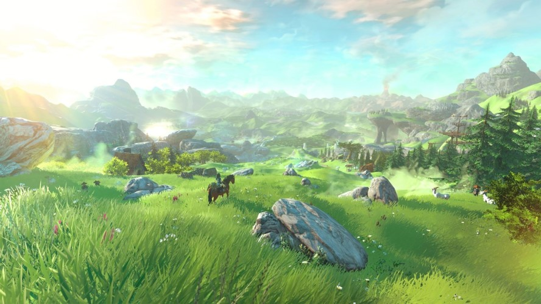
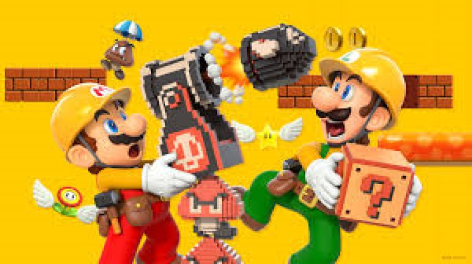

News and Recent Events
Sora's Introduction to Super Smash Brothers: Ultimate
Nintendo Co., Ltd.[b] is a Japanese multinational consumer electronics and video game company headquartered in Kyoto, Japan. The company was founded in 1889 as Nintendo Karuta[c] by craftsman Fusajiro Yamauchi and originally produced handmade hanafuda playing cards. After venturing into various lines of business during the 1960s and acquiring a legal status as a public company under the current company name, Nintendo distributed its first video game console, the Color TV-Game, in 1977. It gained international recognition with the release of Donkey Kong in 1981 and the Nintendo Entertainment System and Super Mario Bros. in 1985.
Haley Joel Osment and Miyu Irino, Sora's main voice actors in English and Japanese respectively since the first Kingdom Hearts game, reprise their roles in the English and Japanese versions of Ultimate, at least partially using re-purposed voice clips from Kingdom Hearts 3D: Dream Drop Distance.
WarioWare™: Get It Together! Releases
For the first time, YOU control Wario and friends inside their own chaotic games. Use their distinctly absurd abilities to take on a rush of microgames. Tip a turtle with the help of Wario’s dash or choose Ashley and hurl a spell at it. In the WarioWare: Get It Together! game, mix and match characters and microgames for maximum fun!
Metroid: Dread
Join bounty hunter Samus Aran as she tries to escape a deadly alien world plagued by a mechanical menace
Upon investigating a mysterious transmission on Planet ZDR, Samus faces a mysterious foe that traps her in this dangerous world. The remote planet has been overrun by vicious alien lifeforms and murderous robots called E.M.M.I. Hunt or be hunted as you make your way through a labyrinth of enemies in Samus’ most intense side-scrolling adventure yet.
Nickelodeon All Star Brawl Releases on Switch
Brawl it out as your favorite Nickelodeon characters in bombastic platform battles! With a power-packed cast of heroes from the Nickelodeon universe, face-off with all-stars from SpongeBob Squarepants, Teenage Mutant Ninja Turtles, The Loud House, Danny Phantom, Aaahh!!! Real Monsters, The Wild Thornberrys, Hey Arnold!, Rugrats, and more to determine ultimate animation dominance. With unique move sets and attacks inspired by their personalities, each character has an individual style of play enabling endless action for Nickelodeon’s legion of fans. Select your favorite and then let the intense brawls begin with online and local multiplayer action.

Nintendo Co., Ltd.[b] is a Japanese multinational consumer electronics and video game company headquartered in Kyoto, Japan.
The company was founded in 1889 as Nintendo Karuta[c] by craftsman Fusajiro Yamauchi and originally produced handmade
hanafuda playing cards. After venturing into various lines of business during the 1960s and acquiring a legal status as a
public company under the current company name, Nintendo distributed its first video game console, the Color TV-Game, in
1977. It gained international recognition with the release of Donkey Kong in 1981 and the Nintendo Entertainment System
and Super Mario Bros. in 1985.
Since then, Nintendo has produced some of the most successful consoles in the video game industry, such as the Game Boy,
the Super Nintendo Entertainment System, the Nintendo DS, the Wii, and the Nintendo Switch. It has created numerous major
franchises, including Mario, Donkey Kong, The Legend of Zelda, Pokémon, Kirby, Metroid, Fire Emblem, Animal Crossing,
Splatoon, Star Fox, Xenoblade Chronicles, and Super Smash Bros. The character of Mario is internationally recognisable,
and serves as the company's mascot.
Nintendo has multiple subsidiaries in Japan and abroad, in addition to business partners such as The Pokémon Company and
HAL Laboratory. Nintendo and its staff has received awards including Emmy Awards for Technology & Engineering, Game Awards,
Game Developers Choice Awards and British Academy Games Awards. It is one of the wealthiest and most valuable companies
in the Japanese market.